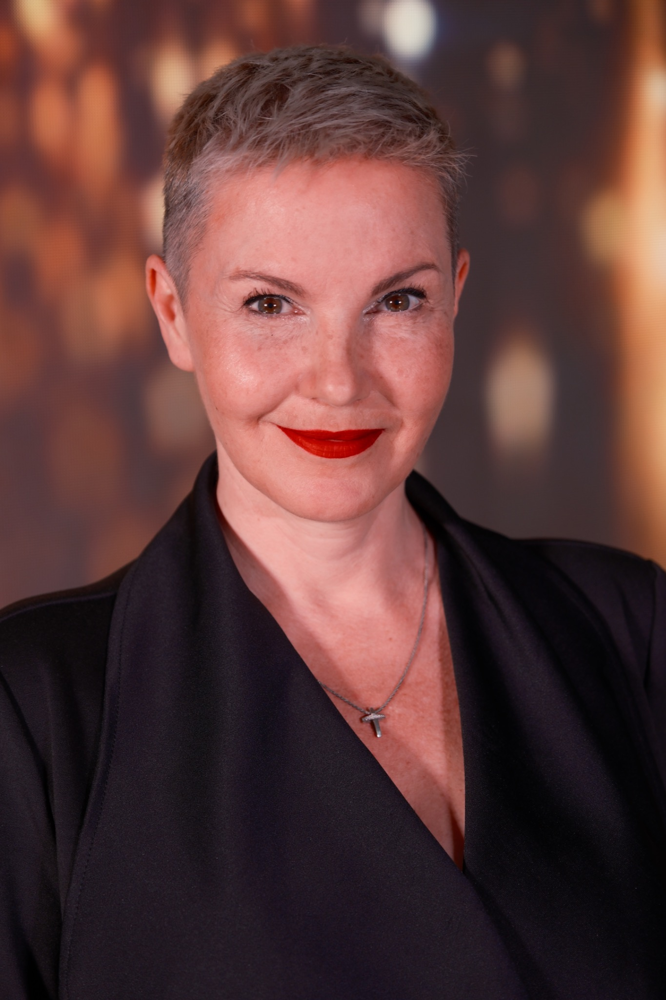

Live PerformanceVocal performance
Live vocal entertainment · Baguio & beyond
Kate SankhipJazz & Blues
An unforgettable soundtrack to your evening. Soulful jazz, blues and timeless classics — live vocals for restaurants, lounges and special occasions.
Restaurant evenings · Private eventsPhilippines

Meet the artist
Music that stays with you
Kate Sankhip is a vocalist with 18 years of music education, including studies in operatic vocal performance at a conservatory in Yekaterinburg, Russia. She also plays piano, violin and guitar.
She has performed in restaurants, cafés and at corporate and festive events in Russia, Montenegro and the Philippines. Her expressive vocals and thoughtfully selected songs create a warm, memorable atmosphere.
Performances feature live vocals with professional instrumental backing tracks. Repertoire includes songs in English, Russian, Italian and Spanish.
18 yearsMusic education
3 countriesPerformance experience
4 languagesSong repertoire
Watch & listen
See the music come alive
Real moments from live performances. Press play to experience Kate's voice and stage presence.
Live Vocal PerformanceLive performance
On StageWith live musicians
Live Vocal HighlightsIntimate acoustic performance
Footage includes past performances with accompanying musicians. Current bookings are offered as live vocals with backing tracks.
The repertoire
Four moods One voice
Choose an atmosphere for your venue or event. Each program can be adapted to your audience and the occasion.
01 / SIGNATURE
Jazz & Blues Evening
Jazz standards, blues-inflected favorites and contemporary songs reimagined with a jazzy touch.
- Dream a Little Dream of Me
- My Funny Valentine
- Summertime
- The Man I Love
- La Vie en Rose — jazz cover
- Sway
More songs
- Quizás, Quizás, Quizás
- Beyond the Sea
- Moon River
- Creep — jazz cover
- Sweet Dreams — jazz cover
- Young and Beautiful — jazz cover
- Killing Me Softly with His Song
- Ya — To, Chto Nado (I’m Just What You Need)
- Zhyoltye Botinki (Yellow Boots)
- Charli (Charlie)
02 / INTIMATE
Romantic Dinner
Beautiful ballads and beloved classics, perfect for candlelit dinners and memorable celebrations.
- My Way
- Bésame Mucho
- Con te partirò
- Can't Help Falling in Love
- Unchained Melody
- Wicked Game
More songs
- Hallelujah
- Young and Beautiful
- Can't Take My Eyes Off You
- Stand by Me
- I Don't Know How to Love Him
- Sunny
- I Got You (I Feel Good)
- I'm Not the Only One
03 / SPECIAL PROGRAM
Russian Romance & Nostalgia
Traditional Russian romances and beloved Russian-language classics for an evocative themed evening.
- Ochi Chyornye (Dark Eyes)
- Kalitka (The Little Gate)
- Gori, Gori, Moya Zvezda (Shine, Shine, My Star)
- Yamshchik, Ne Goni Loshadey (Coachman, Do Not Hurry the Horses)
- V Gornitse (In the Upper Room)
- Oy, Da Ne Vecher! (Oh, It Is Not Evening Yet!)
More songs
- Ballada Atosa (Athos’s Ballad)
- Polyot Na Deltaplane (Hang-Glider Flight)
- Tyoplye Koty (Warm Cats)
- Lesnoy Olen (Forest Deer)
- Klyon (Maple Tree)
- Serenada Trubadura (The Troubadour’s Serenade)
- Ya — To, Chto Nado (I’m Just What You Need)
- Zhyoltye Botinki (Yellow Boots)
- Charli (Charlie)
- Luch Solntsa Zolotogo (A Golden Ray of Sunshine)
04 / SEASONAL
Christmas & New Year
Festive standards, nostalgic favorites and holiday magic for Christmas dinners and New Year celebrations.
- Have Yourself a Merry Little Christmas
- Let It Snow!
- Winter Wonderland
- Santa Baby
- Happy New Year
- Jingle Bells
More songs
- It's Beginning to Look a Lot Like Christmas
- I'll Be Home for Christmas
- Santa Claus Is Coming to Town
- Silent Night
- Pyat Minut (Five Minutes)
- Snezhinka (Snowflake)
- A Sneg Idyot (And the Snow Is Falling)
- Novogodnyaya (New Year Song)
For venues & event planners
Effortless elegance, live
A flexible vocal program that works beautifully in restaurants, lounges, hotels, corporate gatherings and private celebrations.
2–3 live sets30–45 minutes per set with approximately 15-minute breaks
Flexible schedulingWeekdays, weekends and special occasions by arrangement
Backing-track performanceKate brings a microphone, cable and laptop; a suitable sound system is required
Baguio & beyondAvailable for events across the region and further afield by arrangement
Make your evening memorable
Let's bring live music to your venue
Booking for restaurants, lounges, hotels, corporate events and private celebrations. Rates and availability provided upon request.
Enquire on WhatsApp ↗